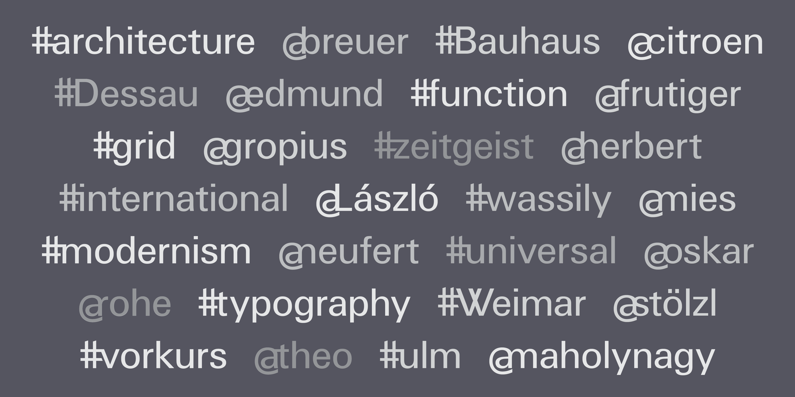
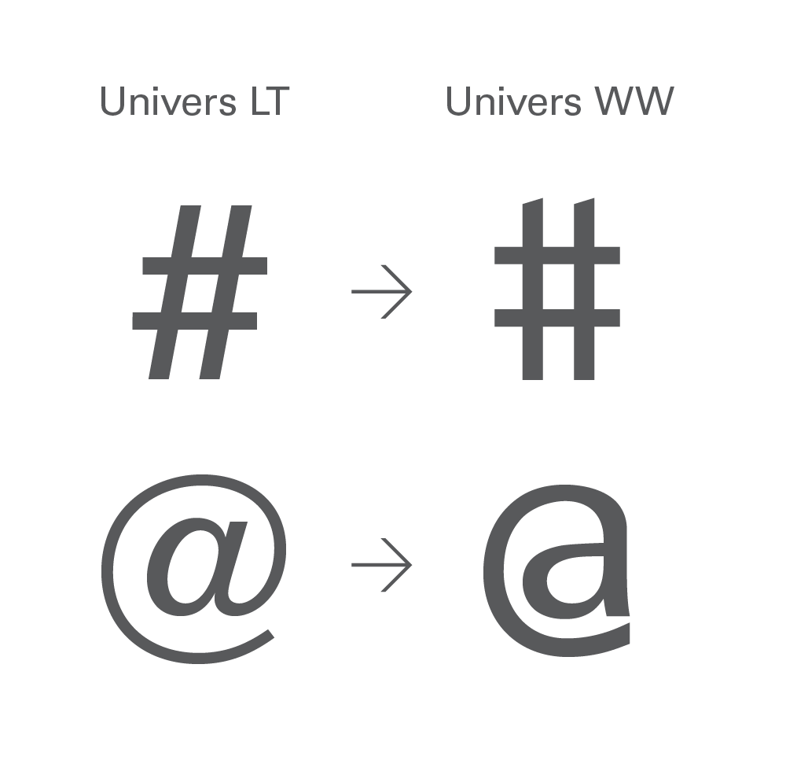
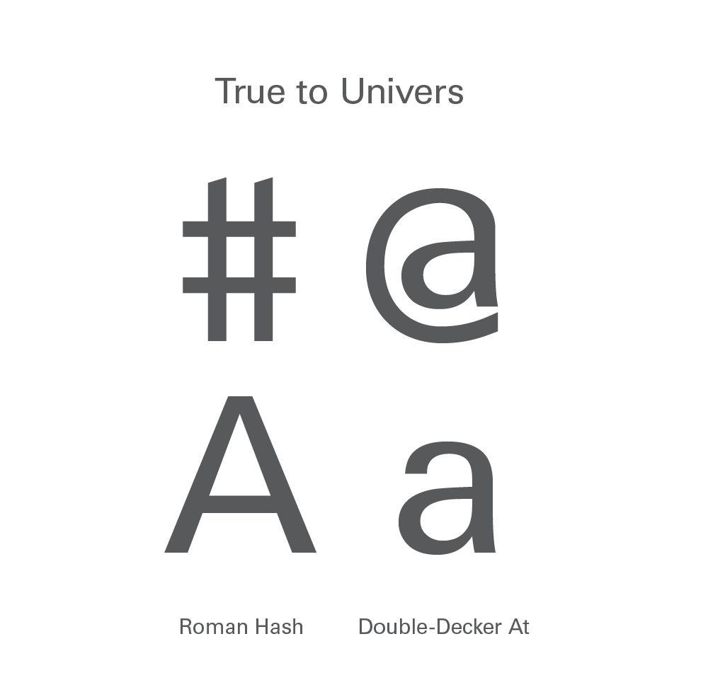
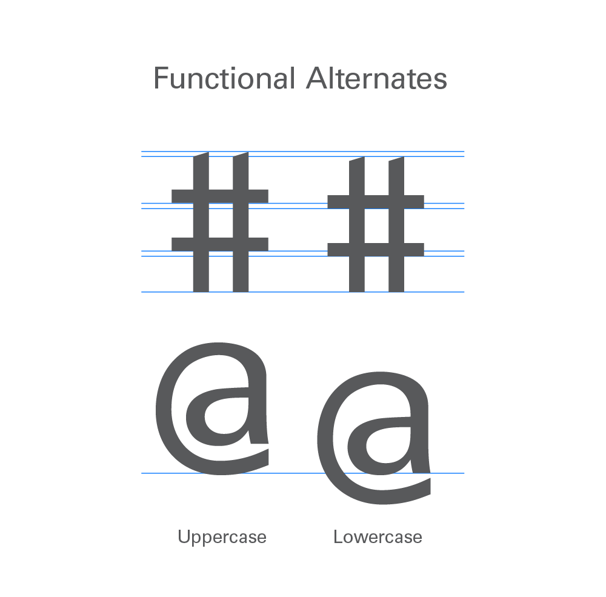
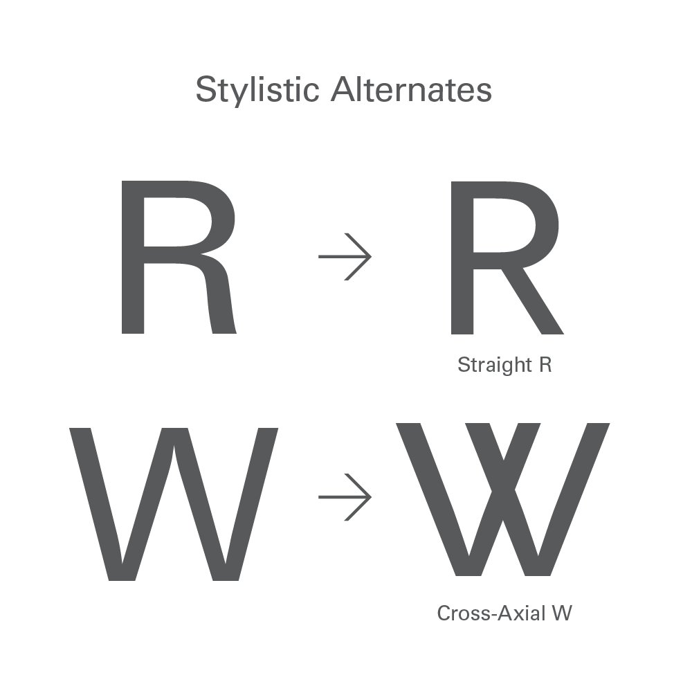
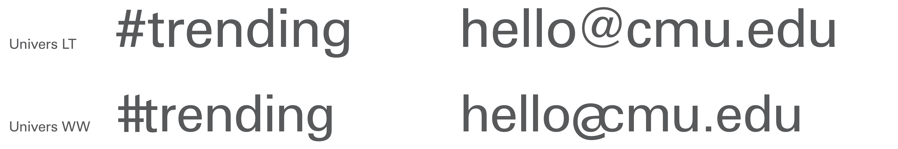
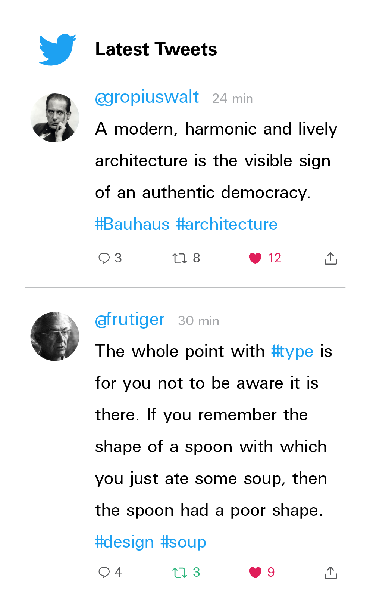
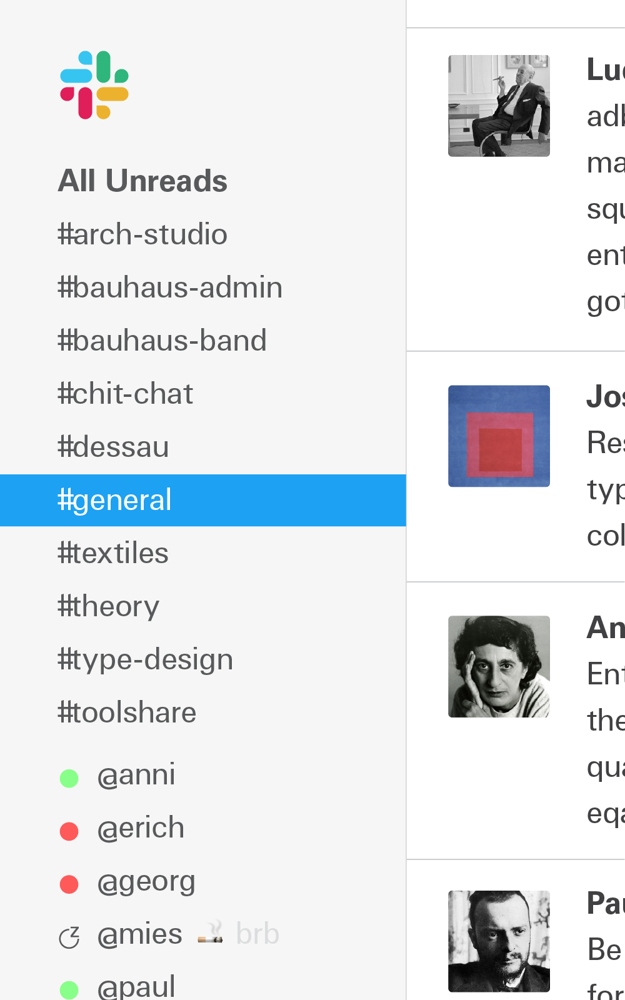
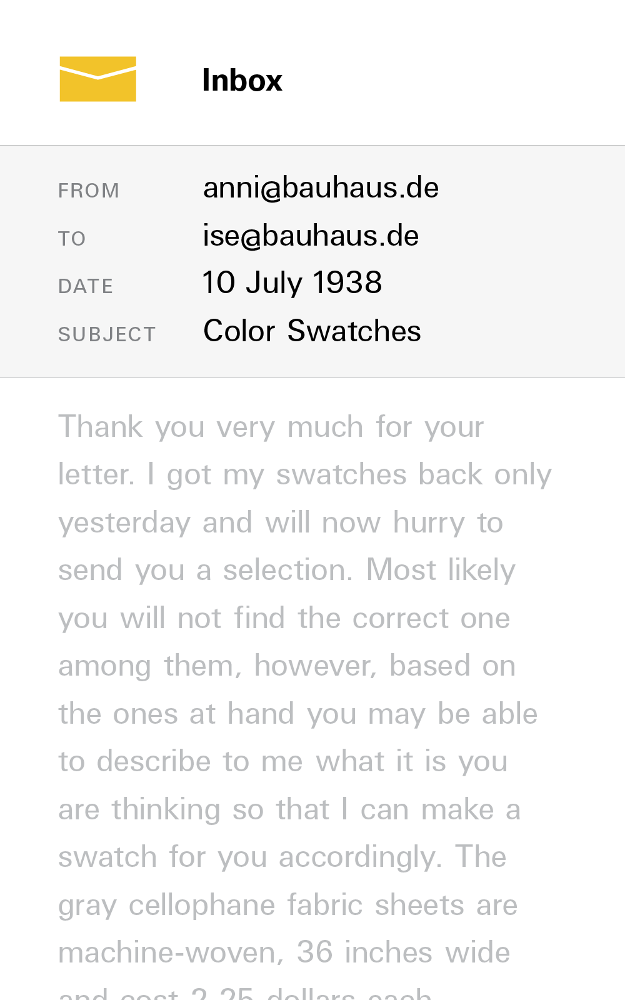

Univers for 2020
by Alexander R. Wilcox Cheek and Elliott Williams 
A 2020 interpretation of Adrian Frutiger’s Univers based on the open-source Univers U001. To meet the needs of modern internet usage, Wilcox and Williams (WWTF) developed an extensive set of discretionary ligatures for @ and hashtag symbols. Univers WW also updates the @ and # designs to better match Univers’ classic forms.
- @ and # symbols true to Univers.
- Discretionary ligatures for tagging and hashtags.
- Alternates for upper- and lower-case.
Univers meets the 21st century
   

Discretionary Ligatures

FAQ
Why did you make this?
Before the internet, the @ and # symbols were afterthoughts in many typefaces. In Univers, the @ symbol looked nothing like the rest of the typeface, and the # was slanted, as if it were designed for the oblique hand. The number sign meant something entirely different than how it is used today.
In both cases, their prevalence now forces us to look differently at how they’re designed and how they pair. Bringing ligatures like these to digital communications binds together the character with the handle or tag. By putting this idea out there, we hope it can influence type design for digital communications. It’s not perfect; it’s just a first take.
Why Univers?
It’s our favorite. It is modern and has a neutrality that allowed us to explore the concept. We hope that others can update other elements of Univers to make it more screen-friendly.
Are there other weights?
No, just 55 Roman. If others wish to explore other weights, we encourage them to do so.
Why don’t all the characters have pairings with the symbols?
Not every character lent itself to be paired with the symbols, like @a. Some that we did ship might feel like a stretch while others were clear non-starters.
Is it free?
We based our work off of the open-source U001 Univers. Like U001, Univers WW comes with an Aladdin Free Public License. Download the font under the Aladdin Free Public License
Will you design a typeface for me or my company?
No, we encourage you to hire a professional type foundry for a project like that. If you’re interested in business transformation and strategy through design, give us a call.
In the Wild
  